Tus pagos al ritmo de tu calendario.
Planifica facturas y suscripciones, configura recordatorios y mantén una vista mensual clara. Tus datos permanecen en el dispositivo.
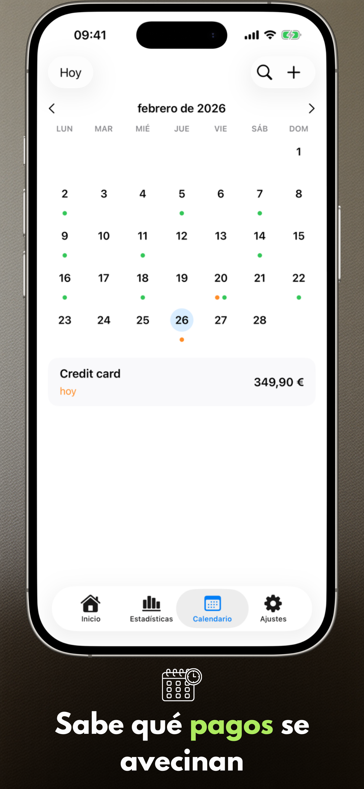
- Se añadió la edición de la fecha real de pago
- Se añadió la etiqueta "Todo pagado" en la pantalla principal
- Se mejoraron las estadísticas y la vista de calendario
- Animaciones más fluidas, mejor legibilidad y mejor aspecto en iPad
Conoce la aplicación
Seis pantallas clave en iPhone y iPad que muestran el ritmo de planificación con Payment Calendar.
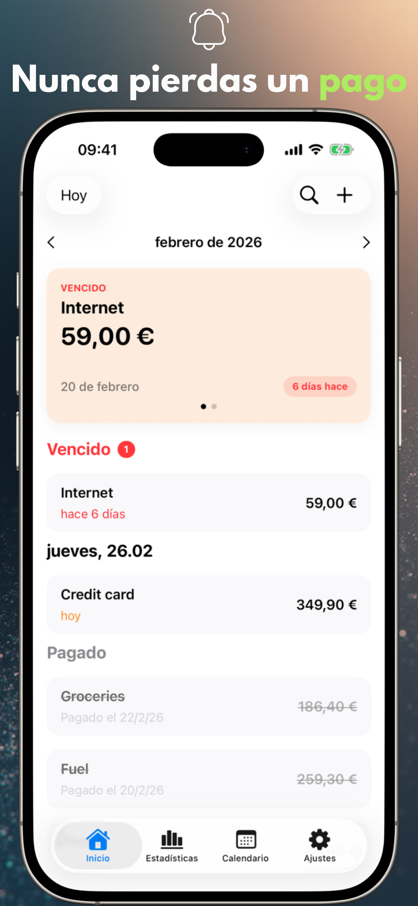
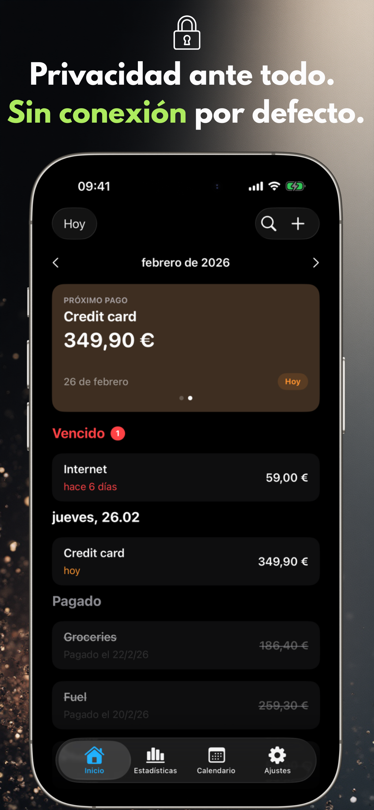
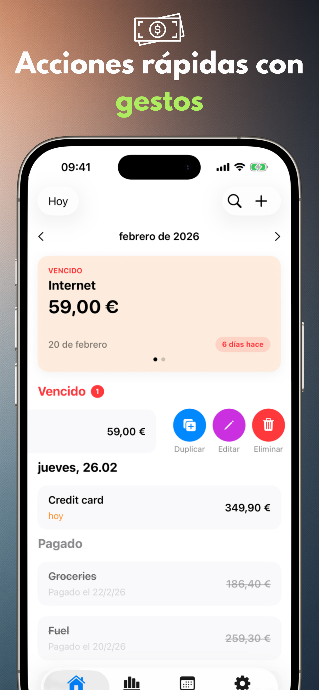
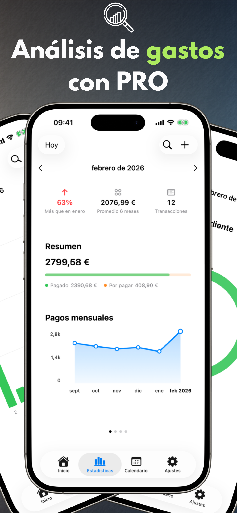
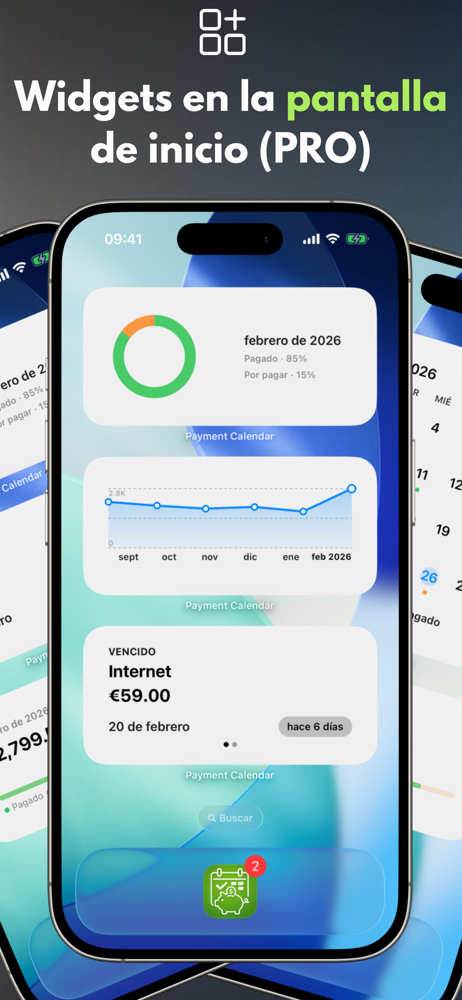
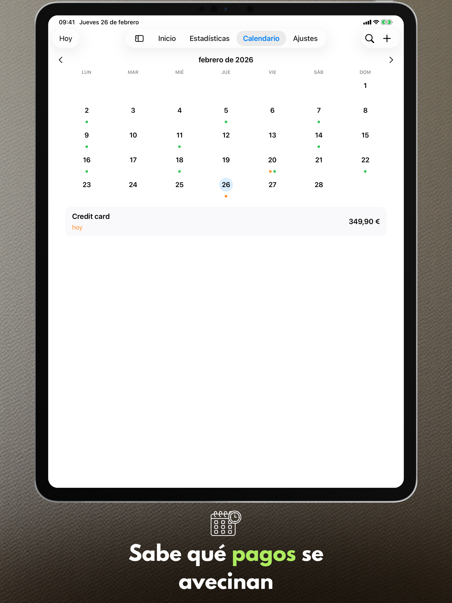
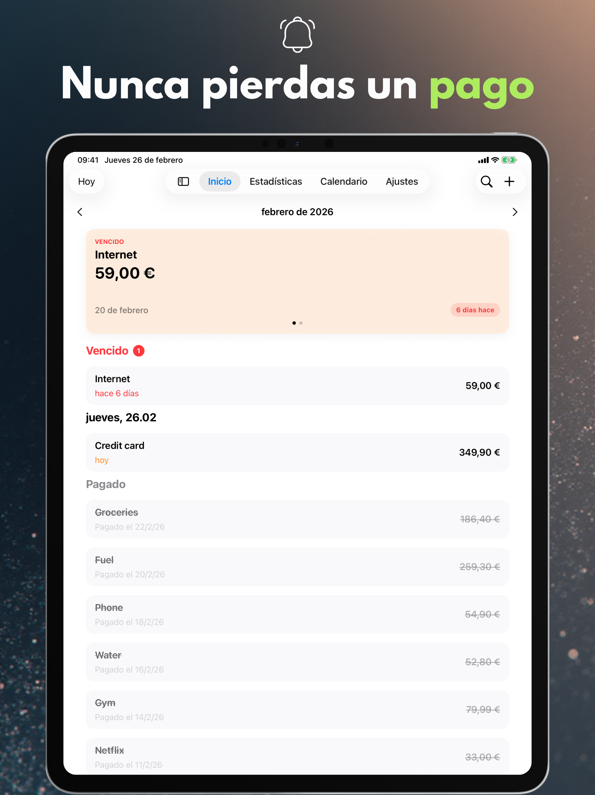
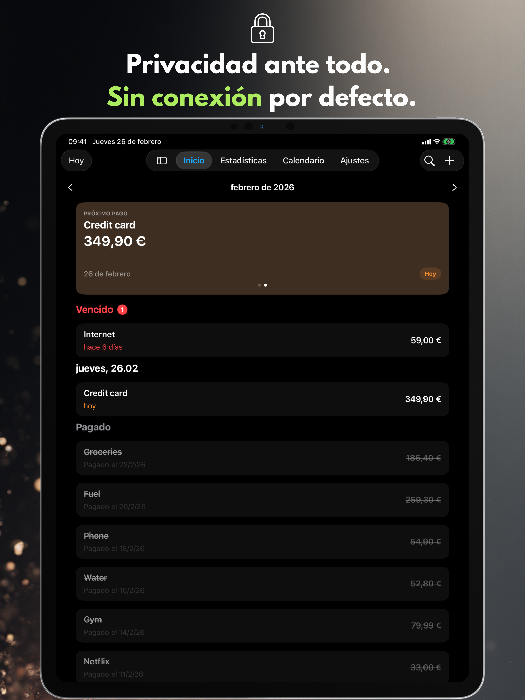
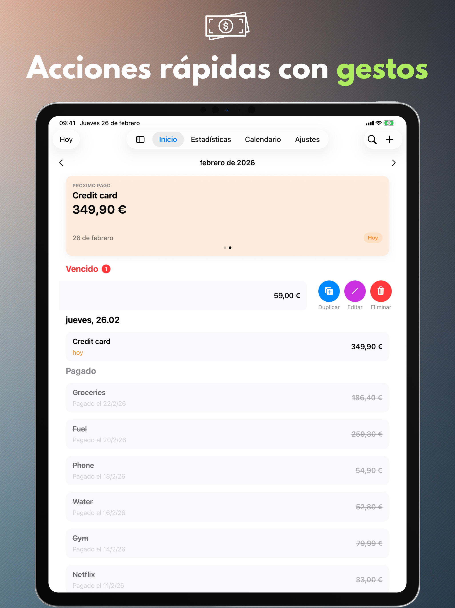
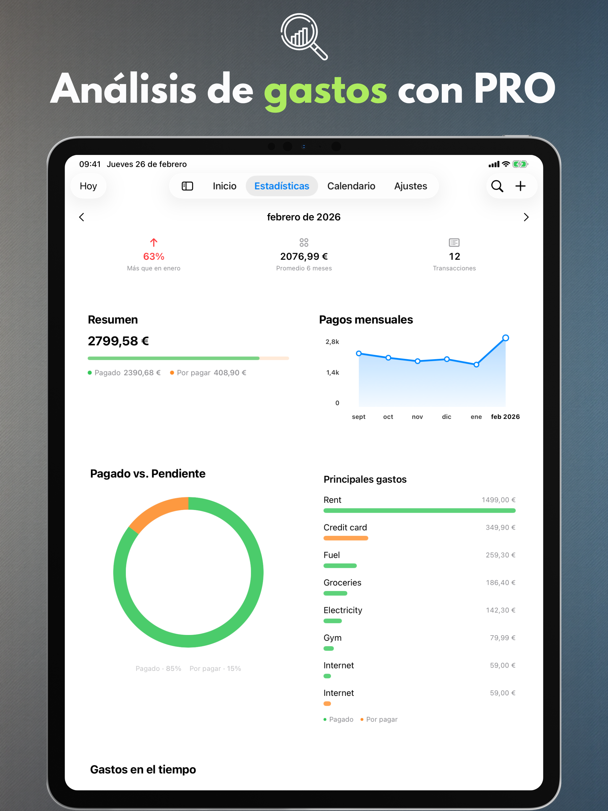
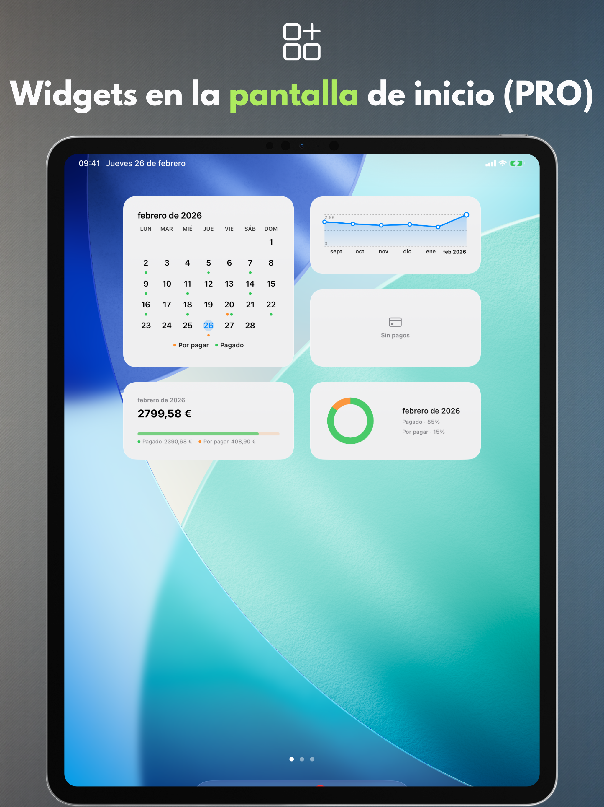
Funciones principales
Una vista mensual clara, entrada rápida y recordatorios que te ayudan a adelantarte a cada pago.
Calendario de pagos
Consulta las fechas de vencimiento próximas y tu lista de pagos en un solo lugar.
Recordatorios
Recibe notificaciones el día de vencimiento o unos días antes.
Gestos y acciones rápidas
Marca como pagado, edita o duplica con un deslizamiento.
Búsqueda
Encuentra pagos por nombre, cantidad o notas.
Configuración personal
Moneda, inicio de semana, diseño y un diseño que se adapta a ti.
Compatibilidad con iPad
Optimizado para iPad, incluyendo modo de ventanas y Split View.
Exportación CSV/PDF (PRO)
Exporta resúmenes cuando necesites un informe.
Tus datos permanecen en el dispositivo.
Payment Calendar no requiere cuenta y no rastrea tu actividad. La sincronización con iCloud es opcional y está desactivada por defecto.
Sin anuncios, sin análisis
No usamos SDKs de terceros para análisis o publicidad.
Control de datos
Elimina tus datos en cualquier momento desde la aplicación o desinstalando.
Funciones PRO
Actualiza para obtener estadísticas, widgets y automatización.
Estadísticas y tendencias
Resúmenes mensuales más vista de tendencias de 6 meses.
Widgets
Consulta el próximo pago de un vistazo en tu pantalla de inicio.
Pagos recurrentes
Crea automáticamente pagos recurrentes.
Sincronización con iCloud
Mantén los datos sincronizados en tus dispositivos cuando esté activado.
Exportación CSV/PDF
Comparte resúmenes o archiva tus datos.
11 idiomas disponibles
Payment Calendar admite polaco, inglés, español, alemán, francés, italiano, ucraniano, sueco, chino simplificado, japonés y portugués (Brasil).
Preguntas frecuentes (FAQ)
Consulta respuestas rápidas a las preguntas más habituales sobre Payment Calendar.
Antes de descargar
¿Cómo no olvidar el pago de una factura?
Payment Calendar muestra todos los próximos pagos en la vista mensual y envía recordatorios antes del vencimiento, para que veas con antelación qué hay que pagar y cuándo.
¿Cómo controlar las suscripciones para no pagar por las que ya no uso?
Añade tus suscripciones como pagos recurrentes (función PRO) — la aplicación te avisa automáticamente de cada renovación, así detectas y cancelas antes las que ya no usas.
¿Existe una aplicación como un calendario, pero para facturas y pagos?
Sí, esa es exactamente la idea de Payment Calendar — la vista mensual muestra pagos en lugar de eventos, indicando qué está pagado y qué sigue pendiente.
¿Cómo gestionar pagos sin crear una cuenta?
Payment Calendar no requiere registro ni inicio de sesión — instalas la app y añades pagos de inmediato. Los datos permanecen en el dispositivo, a menos que actives tú mismo la sincronización opcional con iCloud.
¿En qué se diferencia Payment Calendar de un calendario normal del teléfono?
Un calendario estándar muestra eventos, no pagos — no tiene un estado de "pagado / pendiente", recordatorios pensados para facturas ni visión de tus gastos. Payment Calendar está diseñado específicamente para pagos: con importes, monedas, recurrencia y estadísticas de cuánto gastas realmente cada mes.
Lo esencial
¿Qué es la aplicación Payment Calendar?
Payment Calendar es una app para iPhone y iPad (iOS/iPadOS) para seguir facturas y pagos próximos en formato de calendario. Te permite ver rápidamente qué vence y marcar pagos como pagados.
¿La aplicación funciona sin conexión?
Sí. La aplicación funciona sin conexión y no requiere cuenta ni conexión a internet. Los datos se guardan localmente en el dispositivo. La sincronización opcional con iCloud (en la versión PRO) permite acceder a los datos en varios dispositivos Apple.
¿En qué dispositivos funciona Payment Calendar?
La aplicación funciona en iPhone y iPad con iOS/iPadOS 18.0 o posterior.
Privacidad y datos
¿Mis datos financieros están seguros?
Sí. Payment Calendar no recopila datos del usuario y no requiere inicio de sesión. Tus datos permanecen en tu dispositivo, y la sincronización opcional con iCloud (en la versión PRO) se realiza dentro del ecosistema Apple.
¿Payment Calendar se conecta a mi cuenta bancaria?
No. Payment Calendar no se conecta a ningún banco ni descarga transacciones automáticamente — los pagos se añaden de forma manual. Es una decisión consciente: la aplicación apuesta por la privacidad desde el diseño y no necesita acceder a tu cuenta bancaria para funcionar.
Funciones
¿Puedo añadir pagos recurrentes y suscripciones?
Sí. Puedes añadir pagos recurrentes, como suscripciones y facturas mensuales. Esta función está disponible en la versión PRO.
¿La aplicación envía recordatorios de pagos próximos?
Sí. Puedes configurar recordatorios para no perder ningún pago.
¿Qué monedas admite Payment Calendar?
La aplicación admite un amplio conjunto de monedas, entre ellas el peso colombiano, el tugrik mongol, el peso mexicano, el peso chileno y el dólar neozelandés. El formato (símbolos, separadores, redondeo) se adapta automáticamente a la región de tu dispositivo.
¿Puedo exportar mis pagos?
Sí, en la versión PRO. Puedes exportar tus datos a un archivo CSV o PDF, por ejemplo para un informe o para archivarlos.
¿Puedo corregir la fecha real de pago?
Sí. El formulario de edición de un pago ya pagado incluye el campo "Pagado", donde puedes indicar la fecha real en que lo pagaste. Las estadísticas siguen agrupando los pagos por su fecha de vencimiento, no por la fecha de pago.
¿Hay un widget para la pantalla de inicio?
Sí, en la versión PRO. El widget muestra el próximo pago directamente en la pantalla de inicio de tu iPhone o iPad, sin necesidad de abrir la aplicación.
¿Payment Calendar es una app para gestionar el presupuesto familiar?
No. Es un calendario de facturas que te ayuda a seguir pagos próximos y pagados. No gestiona ingresos, saldos de cuenta ni presupuestos.
Sincronización e idiomas
¿Los datos se sincronizan entre iPhone y iPad?
Sí, si activas la sincronización opcional con iCloud (función PRO) — entonces tus pagos están disponibles en todos los dispositivos Apple con la misma cuenta de iCloud. Sin esta opción, los datos permanecen solo en un dispositivo.
¿En qué idiomas está disponible la aplicación?
Payment Calendar está disponible en 11 idiomas: polaco, inglés, español, alemán, francés, italiano, ucraniano, sueco, chino simplificado, japonés y portugués (Brasil).
Plataformas
¿Payment Calendar está disponible para Android?
No. Payment Calendar está disponible actualmente solo para iPhone y iPad (iOS/iPadOS).
¿Hay una versión para Apple Watch?
Todavía no, pero el soporte para watchOS está en los planes de desarrollo de la aplicación.
Precio y PRO
¿Puedo usar la aplicación sin una suscripción de pago?
Sí. Las funciones básicas son gratuitas. Las funciones PRO, como pagos recurrentes y sincronización con iCloud, requieren suscripción o compra única.
¿Cuánto cuesta la versión PRO y puedo cancelar la suscripción?
El precio depende de la región y se muestra en la aplicación y en el App Store. Puedes elegir entre una suscripción mensual, anual o una compra única de por vida (Lifetime). Gestionas y cancelas la suscripción desde los ajustes de tu Apple ID, igual que cualquier otra suscripción del App Store.
Soporte
Falta una moneda o tengo una idea para una nueva función — ¿qué puedo hacer?
Escribe a payment_calendar@icloud.com. Leo y respondo personalmente cada correo — las sugerencias e ideas de los usuarios llegan de verdad a las próximas versiones.
¿Listo para una planificación de pagos más tranquila?
Payment Calendar mantiene cada fecha de vencimiento bajo control.